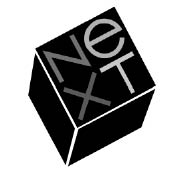

NeXT
Zincirlerinden Kurtulan Prometheus

Korsanlar Gemiyi Terk Ediyor
Stanford Başkanı Donald Kennedy’nin Palo Alto’da düzenlediği bir öğle yemeğinde Jobs kendini biyokimyager Paul Berg’in yanında buldu; Nobel ödüllü Berg, gen bölünmesi ve rekombinant DNA alanında kaydedilen gelişmelerden bahsetti. Jobs öğrenmeye bayılırdı, özellikle de kendisinden daha bilgili birinin yanında olduğunu hissedince. Ağustos 1985’te Avrupa’dan dönünce, şimdi ne yapacağını düşünürken Berg’i arayıp buluşma teklif etti. Stanford kampüsünde yürüdüler ve sonunda küçük bir kafede öğle yemeği yediler.
Berk biyoloji laboratuvarlarında deney yapmanın zorluklarından, öyle yerlerde deney yapıp sonuç almanın haftalar sürebildiğinden bahsetti. “Neden bilgisayarda simülasyonlarını yapmıyorsun?” diye sordu Jobs. “Böylece hem daha çabuk deney yaparsın, hem de ileride ülkedeki bütün yeni mikrobiyoloji öğrencileri Paul Berg’in rekombinant yazılımıyla oynayabilirler.”
Berg o kapasitedeki bilgisayarların üniversite laboratuvarları için fazla pahalı olduğunu açıkladı. “Jobs olasılıkları düşününce birden heyecanlandı,” diyor Berg. “Yeni bir şirket kurmak istiyordu. Gençti, zengindi ve hayatının geri kalanında yapacak bir şeyler bulması gerekiyordu.”
Jobs akademisyenlerle konuşup, bir iş istasyonunda hangi özelliklere ihtiyaç duyacaklarını sormuştu bile. Bu konuyla 1983’ten, Brown Üniversitesi bilgisayar bilimi bölümüne Macintosh’u göstermeye gidip de üniversite laboratuvarları için çok daha güçlü bir makinenin gerekeceğini işittiğinden beri ilgilenmekteydi. Akademisyen araştırmacıların hayali hem güçlü, hem de kişisel bir iş istasyonuna sahip olmaktı. Jobs Macintosh bölümünün başındayken, öyle bir makine yaratmak için Big Mac projesini başlatmıştı. Bu bilgisayarda Unix işletim sistemi, ama dostane Macintosh arayüzü olacaktı. Ancak Jobs’ın 1985 yazında Macintosh bölümünden kovulmasından sonra yerine geçen Jean-Louis Gassée projeyi iptal etti.
Proje iptal edilince, Big Mac’in yonga kümesinin mühendisliğini yapan Rich Page, Jobs’ı arayıp yakındı. Hoşnutsuz Apple çalışanları daha önce de Jobs’ı aramış, yeni bir şirket kurup onları kurtarmasını söylemişlerdi. Jobs planlarını İşçi Günü haftasının sonunda, ilk Macintosh yazılım şefi Bud Tribble’la konuşunca netleştirdi ve güçlü ama kişisel bir iş istasyonu üretecek bir şirket kurma fikrinden bahsetti. İstifa edeceklerini söyleyen iki Mac bölümü çalışanını, mühendis George Crow’la denetleyici Susan Barnes’ı da projeye dahil etti.
Artık ekipte tek bir kişi eksikti: yeni ürünü üniversitelere pazarlayabilecek biri. Jobs’ın bir zamanlar broşür karıştırdığı Sony ofisinde çalışmış Dan’l Lewin bariz adaydı. Jobs Lewin’i 1980’de işe almıştı; Lewin Macintosh bilgisayarları toptan satın alacak bir üniversite birliğini organize etmişti. Adının iki harfi eksik olan Lewin, Clark Gable gibi yakışıklıydı, bir Princetonlu kadar havalıydı ve o üniversitesinin yüzme takımının yıldızıymışçasına biçimliydi. Farklı koşullarda büyümelerine karşın o ve Jobs bir bağı paylaşıyorlardı: Lewin Princeton’dayken Bob Dylan ve karizmatik liderlik üstüne bir tez yazmıştı, ki Jobs bu iki konudan da anlardı.
Lewin’in üniversite birliği Macintosh grubu için Tanrı’nın bir lütfuydu, ama Jobs’ın gitmesi ve pazarlama bölümünü reorganize eden Bill Campbell’ın üniversitelere yapılan doğrudan satışların azalmasına yol açması Lewin’in canını sıkmıştı. Jobs’ı aramayı düşünürken o İşçi Günü haftasının sonunda Jobs onu aradı. Lewin Jobs’ın mobilyasız konağına gitti ve bahçede yürürken yeni bir şirket kurma olasılığından bahsettiler. Lewin heyecanlanmıştı, ama bu yola sapmaya henüz hazır değildi. Ertesi hafta Bill Campbell’la birlikte Austin’e gidecekti ve kararını o zaman vermek istiyordu.
Lewin Austin’den dönünce kararını söyledi: Kabul ediyordu. O sıralar, 13 Eylül’de Apple yönetim kurulu toplantısı yapılacaktı. Jobs hâlâ sözde yönetim kurulu başkanı olsa da, iktidarını yitirdiğinden beri toplantılara katılmamıştı. Sculley’yi aradı, toplantıya katılacağını söyledi ve gündemin sonuna “yönetim kurulu başkanının raporu”nun eklenmesini istedi. Sculley’ye raporun konusunu söylemedi; Sculley de raporun son reorganizasyonun eleştirisi olacağını varsaydı. Oysa Jobs yeni bir şirket kurma planlarından bahsetti. “Epey düşündüm ve hayatıma devam etmemin zamanı geldi,” diye söze başladı. “Bir şeyler yapmam gerektiği bariz. Otuz yaşındayım.” Sonra hazırladığı notlara bakarak, yüksek öğretim pazarına yönelik bir bilgisayar yaratma planından bahsetti. Yeni şirketin Apple’a rakip olmayacağına söz verdi; ayrıca yanına çok önemli olmayan birkaç çalışanı alacaktı o kadar. Apple’ın yönetim kurulu başkanlığından istifa etmek istediğini, ama birlikte çalışabileceklerini umduğunu söyledi. Yaratacağı ürünün dağıtım haklarını Apple’ın satın almasını veya ona Macintosh yazılımının lisansını vermesini önerdi.
Mike Markkula, Jobs’ın Apple çalışanlarını yanına alması fikrinden hoşlanmadı.
“Neden buradan birilerini almak istiyorsun ki?” diye sordu Jobs’a.
“Rahat ol,” dedi Jobs. “Eksikliğini hissetmeyeceğiniz, çok alt düzey insanlar bunlar; hem zaten istifa edeceklerdi.”
Yönetim kurulu başta Jobs’a yeni girişiminde başarılar dilemeye meyilliymiş gibi göründü. Hatta yöneticiler kendi aralarında özel bir görüşme yaptıktan sonra, Apple’ın yeni şirketin %10 hissesini satın almasını ve Jobs’ın yönetim kurulunda kalmasını önerdiler.
O gece Jobs ve beş asi korsanı akşam yemeği için evinde buluştular yine. Jobs Apple’ın yatırımını kabul etme taraftarıydı, ama diğerleri bunun akıllıca olmayacağına ikna ettiler. Ayrıca hemen topluca istifa etmelerinin en iyisi olacağına karar verdiler. Böylece temiz bir başlangıç yapabilirlerdi.
Günün sonunda Jobs Sculley’ye resmi bir mektup yazıp, Apple’dan ayrılacak beş kişinin ismini verdi ve mektubu kargacık burgacık küçük harflerle imzaladıktan sonra ertesi sabah erkenden, Sculley’nin 7:30’daki personel toplantısından önce vermek üzere Apple’a gitti.
“Steve, bunlar alt düzey insanlar değiller ki,” dedi Sculley mektubu okumayı bitirince.
“Ama zaten istifa edeceklerdi,” diye karşılık verdi Jobs. “Bu sabah dokuzda istifalarını verecekler.”
Jobs kendince dürüst davranmıştı. Gemiyi terk eden beş kişi bölüm yöneticileri veya Sculley’nin üst düzey ekibinden değillerdi. Hatta şirketin yeni organizasyonunda konumlarının alçaldığını düşünüyordu hepsi de. Ama Sculley’ye göre bunlar önemli oyunculardı; Page Apple yönetim kurulunun asosiye üyesiydi, Lewin ise yüksek eğitim pazarına açılmakta anahtar önem taşıyordu. Ayrıca Big Mac’in tasarımlarını biliyorlardı; proje iptal edilmiş olsa da bunlar patentli bilgilerdi. Sculley yine de iyimser gibiydi, en azından başta. Israr etmek yerine Jobs’a yönetim kurulunda kalmasını teklif etti. Jobs bunu düşüneceğini söyledi.
Ama Sculley 7:30’daki personel toplantısına girip de üst düzey yöneticilerine kimlerin ayrılacağını söyleyince kıyamet koptu. Jobs’ın yönetim kurulu başkanlığı görevini suistimal ettiği ve şirkete karşı şaşılacak kadar vefasız davrandığı kanısındaydı çoğu. Sculley’nin söylediğine göre Campbell “İkiyüzlülüğünü ortaya çıkarıp onu rezil edelim de millet onu Mesih gibi görmekten vazgeçsin,” diye bağırdı.
Campbell sonradan Jobs’ın önde gelen bir savunucusu ve onu destekleyen bir yönetim kurulu üyesi olsa da, o sabah çok sinirlendiğini itiraf ediyor. “Delirdim resmen, özellikle de Dan’l Lewin’i götürmesine kızdım,” diyor. “Lewin üniversitelerle bağlantılar kurmuştu. Steve’le çalışmanın ne zor olduğundan yakınıp duruyordu, sonra da gitti.” Campbell sahiden de öyle kızmıştı ki toplantıdan çıkıp Lewin’in evini aradı. Lewin’in karısı onun duşta olduğunu söyleyince Campbell “Beklerim,” dedi. Birkaç dakika sonra kadın Lewin’in hâlâ duşta olduğunu söyledi. Campbell beklerim dedi. Lewin nihayet telefona gelince Campbell ona duyduğu haberin doğru olup olmadığını sordu. Lewin doğru olduğunu kabul etti. Campbell bir şey demeden telefonu kapadı.
Sculley üst düzey personelinin hiddetini hissettikten sonra yönetim kurulu üyelerini yokladı. Onlar da Jobs’ın önemli çalışanları yanında götürmeyeceğini söylemekle kendilerini yanılttığını düşündüler. Hele Arthur Rock çok kızdı. Anma Günü’nde Sculley’yi desteklemiş olsa da, Jobs’la arasındaki babacan ilişkiyi onarabilmişti. Daha geçen hafta Jobs’ı ve kız arkadaşı Tina Redse’yi San Francisco’ya davet etmişti, kendisi ve karısı o kızla tanışabilsinler diye. Dördü Rock’ın Pacific Heights’taki evinde güzel bir akşam yemeği yemişlerdi. Jobs kurduğu yeni şirketten bahsetmemişti, dolayısıyla Rock haberi Sculley’den öğrenince kendini ihanete uğramış hissetti. “Yönetim kuruluna gelip bize yalan söyledi,” diye homurdandı Rock sonradan. “Yeni bir şirket kurmayı düşündüğünü söyledi, oysa kurmuştu bile. Orta düzey birkaç kişiyi yanında götüreceğini söyledi. Üst düzey beş kişiyi götürüyormuş meğer.” Yumuşak başlı bir insan olan Markkula da gücenmişti. “Bazı üst düzey yöneticileri gizlice ayartmış. Bu yapılmaz. Centilmence değil.”
Yönetim kurulu ve idari personel hafta sonunda Sculley’yi Apple’ın o kurucu ortağa savaş açması gerektiğine ikna etti. Markkula bir resmi beyanatta bulunup, Jobs’ı “kendi şirketinde kilit Apple çalışanlarından herhangi birini çalıştırmayacağı sözüne taban tabana zıt davranmakla” suçladı. Şöyle devam etti tehditkârca: “Hangi yola başvuracağımızı değerlendiriyoruz.” Wall Street Journal’da Bill Campbell’ın Jobs’ın tavrına “afalladığı, şoke olduğu” alıntısı yapıldı. İsmi verilmeyen bir başka yöneticiden de şu alıntı yapıldı: “Şimdiye kadar çalıştığım hiçbir şirkette bu kadar sinirlenmiş insanlar görmedim. Hepimiz Jobs’ın bizi kandırmaya çalıştığını düşünüyoruz.”
Jobs Sculley ile yaptığı görüşmeden sonra meselenin sorunsuz hallolacağını düşündüğünden pek sesini çıkarmamıştı. Ama gazeteleri okuyunca bir karşılık vermesi gerektiğini hissetti. Birkaç favori muhabirini aradı ve ertesi gün evine gelmelerini, özel görüşmeler yapmalarını teklif etti. Sonra Regis McKenna’nın yanında çalışan, daha önce tanıtım işlerini halletmiş olan Andrea Cunningham’ı aradı ve yardıma çağırdı. “Woodside’daki mobilyasız konağına gittim,” diye anımsıyor Cunningham, “ve onu mutfakta buldum; beş iş arkadaşıyla kafa kafaya vermişti ve dışarıdaki çimenlikte birkaç muhabir bekliyordu.” Jobs Cunningham’a büyük bir basın toplantısı düzenleyeceğini söyledi ve edeceği bazı hakaretleri saymaya başladı. Cunningham dehşete kapıldı. “İmajın zedelenir,” dedi Jobs’a. Jobs sonunda geri adım attı. Muhabirlere istifa mektubunun kopyasını vermeye ve röportajlarda alttan almaya karar verdi.
Jobs istifa mektubunu postayla göndermeyi düşünmüştü, ama Susan Barnes bunun burnu büyüklük olacağına ikna etmişti onu. Dolayısıyla Jobs Markkula’nın evine gitti ve orada Apple’ın baş hukuk müşaviri Al Eisenstat’la karşılaştı. On beş dakika kadar süren gergin bir konuşma yaptılar, sonra da Barnes kapıya geldi ve Jobs’ı pişman olacağı bir şey söylemesine fırsat vermeden alıp götürdü. Jobs bıraktığı mektubu Macintosh’ta yazmıştı ve yeni LaserWriter’dan çıktısını almıştı:
17 Eylül 1985
Sevgili Mike:
Bu sabahki gazetelerde, Apple’ın beni yönetim kurulu başkanlığından azletmeyi düşündüğü yazılıydı. Bu haberlerin kaynağı nedir bilmiyorum ama hem halkı yanıltıyorlar, hem de bana haksızlık oluyor.
Geçen Perşembe günkü yönetim kurulu toplantısında yeni bir şirket kurmaya karar verdiğimi ve yönetim kurulu başkanlığından istifa ettiğimi hatırlarsın.
Yönetim kurulu istifamı kabul etmeyi reddetti ve bir haftalığına ertelememi söyledi. Yönetim kurulunun yeni girişimime verdiği desteği ve Apple’ın yatırım yapacağının sinyallerini göz önüne alarak bu teklifi kabul ettim. Cuma günü John Sculley, kendisine kimlerin bana katılacağını söylememden sonra, Apple’ın yeni şirketimle işbirliği yapabileceği alanlar konusunda görüşmeye hazır olduğunu onayladı.
Daha sonraysa şirket bana ve yeni şirketime karşı saldırgan bir tutum benimsemiş gibi görünüyor. Dolayısıyla istifamın hemen kabul edilmesini talep etmek zorundayım...
Bildiğin gibi şirkette geçenlerde yapılan reorganizasyon beni işsiz bıraktı, hatta sıradan yönetim raporlarını bile okumam yasak. Daha yaşım 30 ve faydalı olmak, bir şeyler başarmak istiyorum.
Birlikte başardıklarımızdan sonra dostça ve saygılı bir şekilde ayrılmamızı istiyorum.
Saygılarımla, Steven P. Jobs
Tesis ekibinden bir adam Jobs’ın eşyalarını toplamak için ofisine girince yerde bir fotoğraf çerçevesi gördü. Çerçevedeki fotoğrafta Jobs’la Sculley candan bir sohbete dalmışlardı ve üstünde yedi ay önce yazılmış bir yazı vardı: “Büyük Fikirlere, Büyük Deneyimlere Ve Büyük Bir Dostluğa! John.” Çerçevenin camı kırılmıştı. Jobs gitmeden önce çerçeveyi duvara fırlatmıştı. O günden sonra bir daha Sculley’yle konuşmadı.
Jobs’ın istifası açıklanınca Apple hissesi tam bir puan, yani yaklaşık %7 yükseldi. “Doğu Yakası hissedarları şirketi Californialı’ların yönetmesinden kaygı duyuyorlardı hep,” diye açıkladı bir teknoloji hisseleri dergisi. “Jobs’la Wozniak’ın gitmesi bu hissedarları rahatlattı.” Ama on yıl önce Jobs’a seve seve akıl hocalığı yapmış olan, Atari’nin kurucusu Nolan Bushnell Time’a Jobs’ın yokluğunun çok hissedileceğini söyledi. “Apple kimden ilham alacak? Yeni Pepsi ürünleri gibi vasat mı olacak?”
Sculley’yle Apple yönetim kurulu Jobs’la uzlaşmayı birkaç gün boş yere denedikten sonra ona “bir mutemet olarak yükümlülüklerini ihlal etmek” suçlamasıyla dava açmaya karar verdiler. Şu suçları işlediği öne sürülüyordu:
Jobs bir mutemet olarak Apple’a karşı yükümlülüklerini göz ardı etmiş, Apple Yönetim Kurulu Başkanı ve bir Apple çalışanıyken, Apple’ın çıkarlarına sadık kalır gibi davranırken...
(a) Apple’a rakip bir kuruluş kurmayı gizlice planlamış;
(b) rakip kuruluşunun, Apple’ın Yeni Nesil Ürünü’nden ve Apple’ın bu ürünü tasarlama, geliştirme ve pazarlama planından haksızca faydalanması yönünde gizlice çaba sarf etmiş...
(c) Apple’ın kilit çalışanlarını gizlice kandırıp kendi kuruluşuna çekmiştir...
Jobs o sırada 6,5 milyon Apple hissesine, yani şirketin %11’ine sahipti; elindeki hisselerin değeri 100 milyon dolardan fazlaydı. Hisselerini hemen satmaya başladı. Beş ay içinde hepsini sattı; elinde tek bir hisse bıraktı, istediği zaman hissedarlar toplantılarına katılabilmek için. Çok hiddetli olduğu, ne söylerse söylesin sonuçta Apple’a rakip olacak şirketini kurma hevesinden belliydi. “Apple’a kızgındı,” diyor yeni şirkette kısa süreliğine çalışan Joanna Hoffman. “Apple’ın güçlü olduğu eğitim pazarını hedeflemek, Steve’in bayağı bir şekilde öç almasının yoluydu sadece. Amacı intikamdı.”
Jobs ise öyle düşünmüyordu tabii. “Kesinlikle hınçlı değilim,” dedi Newsweek’e. Favori muhabirlerini bir kez daha Woodside’daki evine çağırdı ve bu sefer yanında dikkatli olmasını söyleyecek Andy Cunningham yoktu. Apple’ın beş çalışanını uygunsuzca ayarttığı iddiasını reddetti. “O insanların hepsi beni aradılar,” dedi mobilyasız oturma odasındaki muhabir topluluğuna. “Şirketten ayrılmayı düşünüyorlardı. Apple insanları ihmal ediyor.”
Jobs Newsweek’e kapak olmak ve böylece durumu kendi açısından izah etmek için işbirliği yapmayı kabul etti ve verdiği röportajlar açıklayıcıydı. “Benim en iyi yaptığım şey bir grup yetenekli insan bulmak ve onlarla birlikte bir şeyler üretmek,” dedi dergiye. Apple’ı hep seveceğini söyledi. “Apple’ı bir erkeğin ilk aşkını hatırlaması gibi hatırlayacağım hep.” Ama gerekirse Apple yöneticileriyle mücadele etmeye hazırdı. “Birisi size alenen hırsız diyorsa karşılık vermeniz gerekir.” Apple’ın onu ve iş arkadaşlarını dava etme tehdidini çok çirkin buluyordu. “4.300 kişi çalıştıran 2 milyar dolarlık bir şirketin kot pantolonlu altı adamla rekabet edemeyeceğini düşünmek güç.”
Sculley Jobs’ın sözlerine karşılık Wozniak’tan yardım istedi. Wozniak asla manipülatif ya da kinci değildi, ama hislerini açıkça ifade etmekten geri durmazdı hiç. “Steve aşağılayıcı, incitici bir insan olabiliyor,” dedi o hafta Time’a. Jobs’ın kendisini yeni şirketine çağırdığını açıkladı –Apple’ın şimdiki yöneticilerine bir darbe daha indirmenin kurnazca bir yolu olacaktı bu–; ama Wozniak böyle oyunlara katılmayacağını söylemiş ve Jobs’ı bir daha aramamıştı. San Francisco Chronicle’a Jobs’ın frogdesign’ın kendi uzaktan kumandasının üstünde çalışmasını engellediğini, bahane olarak da bu ürünün Apple ürünleriyle rekabet edebilir olmasını öne sürdüğünü söyledi. “Umarım muhteşem bir ürün ortaya koyar, kendisine başarılar diliyorum, ama ona insan olarak güvenemem,” dedi Wozniak gazeteye.
Tek Başına Olmak
“Steve’i kovmamız, toz olmasının söylememiz onun başına gelen en iyi şeydi,” dedi Arthur Rock sonradan. Onun gibi pek çok kişi, o zor deneyimin Jobs’ı daha akıllı ve olgun kıldığını söylüyor. Ama mesele bu kadar basit değil. Jobs Apple’dan kovulduktan sonra kurduğu şirkette iyisiyle kötüsüyle bütün içgüdülerinin peşinden gitme imkânı buldu. Zincirlerinden kurtulmuştu. Bunu sonucu, olağanüstü ama satışları düşük bir dizi ürün oldu. Asıl öğretici deneyim buydu işte. Üçüncü perdede kazanacağı büyük başarıya onu hazırlayan şey birinci perdede Apple’dan kovulması değil, ikinci perdedeki muhteşem başarısızlıklarıydı.
Önce tasarım tutkusunu tatmin etmek istedi. Yeni şirketine bulduğu isim gayet anlamlıydı: Next.[20] Şirketini daha dikkat çekici kılmak için dünya çapında iyi bir logoya ihtiyacı olduğuna karar verdi. Bu yüzden şirket logoları uzmanı Paul Rand’e başvurdu. 71 yaşındaki bu Brooklyn doğumlu grafik tasarımcı iş dünyasının en tanınmış logolarından bazılarını, örneğin Esquire, IBM, Westinghouse, ABC ve UPS logolarını yaratmıştı. IBM’le sözleşmeli çalışıyordu ve amirleri bir başka bilgisayar şirketine logo hazırlamasının elbette sorun çıkaracağını söylediler. Bunun üzerine Jobs telefona sarılıp IBM’in CEO’su John Akers’ı aradı. Akers şehir dışındaydı, ama Jobs çok ısrar edince başkan yardımcısı Paul Rizzo’yla görüşebildi. Rizzo iki gün direndikten sonra pes edip, logoyu Rand’ın hazırlaması için Jobs’a izin verdi.
Rand Palo Alto’ya uçtu ve Jobs’la yürüyüş yapıp vizyonunu dinledi. Jobs bilgisayarın küp şeklinde olacağını söyledi. O şekle bayılıyordu. Kusursuz ve basit bir şekildi. Bunun üzerine Rand logonun da küp şeklinde olmasına karar verdi; şık bir şekilde 28º eğik duran bir küp olacaktı. Jobs kendisine seçenekler sunup sunamayacağını sorunca Rand müşterilerine seçenekler sunmanın adeti olmadığını söyledi. “Ben sorununu halledeceğim, sen de bana para vereceksin,” dedi Jobs’a. “Ürettiğim şeyi ister kullan, ister kullanma; ama seçenek sunmayacağım ve her halükârda bana para vereceksin.”
Jobs bu düşünce tarzını takdir etti. Anlayabiliyordu. Dolayısıyla büyük bir riske girdi. Şirket tek bir tasarıma 100.000 dolar gibi şaşırtıcı bir meblağ ödeyecekti. “İlişkimizde netlik vardı,” dedi Jobs. “Paul tam bir sanatçıydı, ama iş problemlerini çözmekte de ustaydı. Dıştan bakınca sertti, huysuzun teki gibi görünüyordu, ama içi yumuşaktı.” Jobs’ın en büyük iltifatlarından biriydi bu: tam bir sanatçı.
Rand işi sadece iki haftada bitirdi. Sonucu göstermek için uçakla geri dönüp Jobs’ın Woodside’daki evine gitti. Önce akşam yemeği yediler, sonra da Rand ona düşünce sürecini anlatan zarif ve canlı bir broşür verdi. Rand son sayfaya seçtiği logoyu koymuştu. “Bu logo tasarımıyla, renk düzeniyle ve oryantasyonuyla tam bir kontrast örneği,” deniliyordu broşüründe. “Şık bir şekilde yana eğik ve teklifsizlik, dostanelik ve bir Noel pulunun spontaneliğiyle bir lastik damganın otoritesini yayıyor.” Next sözcüğü iki satıra bölünüp küpün bir yüzünü kaplamıştı ve sadece “e” küçük harfti. Rand’in broşürü bu harfin “eğitimi, mükemmelliği[21]... ve e=mc²’yi” çağrıştırdığını açıklıyordu.
Jobs’ın bir sunuma nasıl tepki vereceğini kestirmek bazen güçtü. Boktan veya dahice diyebilirdi, sağı solu belli olmazdı. Ama Rand gibi efsanevi bir tasarımcının önerisini kabul ederdi muhtemelen. Jobs son sayfaya baktı, Rand’e baktı ve sonra onu kucakladı. Küçük bir anlaşmazlık yaşadılar: Rand logonun “e”sinin sarısını koyu yapmıştı, Jobs ise sarının daha parlak ve bilindik bir tonda olmasını istiyordu. Rand yumruğunu masaya vurup “Ben bu işi elli yıldır yapıyorum, ne yaptığımı biliyorum,” dedi. Jobs pes etti.
Şirketin artık sadece yeni bir logosu değil, yeni bir ismi de vardı. İsmi artık Next değildi. NeXT’ti. Bir logoya bu kadar kafayı takmanın, hele 100.000 dolar ödemenin anlamsız olduğunu düşünenler çıkabilir. Ama Jobs’a göre o logo NeXT’in hayata dünya çapında bir şirket hissi ve kimliğiyle başladığı anlamına geliyordu, ilk ürünü henüz tasarlanmamış olsa bile. Markkula’nın ona öğrettiği gibi, bir kitabı kapağıyla yargılayabilirsiniz ve büyük bir şirket değer yargılarını uyandırdığı ilk izlenime yansıtabilmelidir. Ayrıca logo son derece havalıydı.
Rand Jobs’a bedavaya kartvizit tasarlamayı kabul etti. Hazırladığı renkli taslağı Jobs beğendi, ama son aşamada Steven P. Jobs yazısındaki “P”nin noktasının yeri konusunda uzun ve şiddetli bir tartışma yaşadılar. Rand noktayı “P”nin hemen sağına koymuştu, yazıda kurşun maatbaa harfleri kullanılmış gibi görünecek şekilde. Steve ise noktanın sola, “P”nin kıvrımının altına çekilmesini istiyordu, dijital tipografide mümkün olan şekilde. “Pireyi deve yaptılar,” diye anımsıyordu Susan Kare. Bu sefer Jobs baskın çıktı.
Jobs’ın NeXT logosunu gerçek ürünlere yerleştirmek için, güvendiği bir endüstri tasarımcısına ihtiyacı vardı. Birkaç adayla görüştü, ama hiçbiri onu Apple’a getirdiği çılgın Bavyeralı kadar etkilemedi: Hartmut Esslinger’in frogdesign’ı Silikon Vadisi’nde şube açmıştı ve Jobs sayesinde Apple’la kârlı bir anlaşma yapmıştı. IBM’in Paul Rand’in NeXT için çalışmasına izin vermesini sağlamak, Jobs’ın gerçekliği çarpıtabileceğine inancı sayesinde başardığı küçük bir mucizeydi. Ama Apple’ı Esslinger’in NeXT için çalışmasına ikna etmenin yanında solda sıfır kalırdı bu.
Jobs yine de şansını denedi. 1985 Kasımı’nın başında, Apple’ın ona dava açmasından sadece beş hafta sonra, Jobs Eisenstat’a (dava dilekçesini yazmış Apple genel hukuk müşavirine) mektup yazıp izin istedi. “Bu hafta sonu Harmut Esslinger’le konuştum ve sana bir mektup yazmamı, kendisiyle neden çalışmak istediğimi, frogdesign’ın NeXT ürünleri üstünde çalışmasını neden istediğimi açıklamamı önerdi,” dedi. Jobs Apple’ın planlarını bilmediğini, Esslinger’inse bildiğini savundu şaşırtıcı bir şekilde. “NeXT Apple’ın ürün tasarımlarının şimdiki ve gelecekteki yönelimlerini bilmiyor, birlikte çalışabileceğimiz diğer tasarım firmaları da bilmiyor, dolayısıyla benzer görünüşlü ürünler tasarlanabilir istemeden.” Eisenstat
Jobs’ın cüretkârlığına şaşırdığını ve onu terslediğini hatırlıyor. “Apple’ın gizli ticari bilgilerini kullanmayı planladığına ilişkin kaygılarımı Apple adına belirtmiştim daha önceden,” diye yazdı. “Mektubun içimi hiç rahatlatmadı. Hatta iyice kaygılandırdı, çünkü ‘Apple’ın ürün tasarımlarının şimdiki ve gelecekteki yönelimlerini’ bilmediğini söylüyorsun, oysa bu doğru değil.” Eisenstat’ı iyice şaşırtan şeyse, Jobs’ın böyle bir istekte bulunmasına karşın daha bir sene önce frogdesign’ın Wozniak’ın uzaktan kumanda cihazının üstünde çalışmasını engellemiş olmasıydı.
Jobs Esslinger’le çalışabilmek için (ki bunu istemesinin çeşitli sebepleri vardı) Apple’ın açtığı davanın sonuçlanması gerektiğini fark etti. Neyse ki Sculley buna istekliydi. Ocak 1986’da, tazminat ödenmemesi konusunda aralarında anlaştılar. Apple’ın davadan vazgeçmesi karşılığında NeXT bazı kısıtlamaları kabul etti: Ürün yüksek teknoloji iş istasyonu olarak pazarlanacaktı, doğrudan kolejlere ve üniversitelere satılacaktı ve Mart 1987’den önce piyasaya sürülmeyecekti. Apple ayrıca NeXT’in makinesinin “Macintosh uyumlu bir işletim sistemi kullanmamasında” ısrarlıydı, oysa tam tersinin onlar için daha iyi olacağı düşünülebilirdi.
Anlaşmadan sonra Jobs Esslinger’i ikna etme çabalarını sürdürdü ve tasarımcı sonunda Apple’la arasındaki sözleşmeyi feshetmeye karar verdi. Böylece frogdesign 1986’nın sonunda NeXT’le çalışabildi. Esslinger tamamen serbest olmakta ısrarlıydı, tıpkı Paul Rand gibi. “Bazen Steve’e kafa tutmak gerek,” dedi. Ama tıpkı Rand gibi Esslinger de sanatçıydı, dolayısıyla Jobs ona diğer ölümlülere olduğundan daha hoşgörülü davranmaya gönüllüydü.
Jobs bilgisayarın kusursuz bir küp olması gerektiğini, her kenarının tam bir ayak uzunluğunda ve her açısının tam 90 derece olması gerektiğini söyledi. Küpleri seviyordu. Hem ciddi, hem de biraz oyuncaksı görünürlerdi. Ama NeXT küpü, işlevin biçimi takip etmesinin Jobs’a özgü bir örneğiydi – oysa Bauhaus’a ve diğer işlevsel tasarımcılara göre tam tersi olmalıydı. Pizza kutusu şeklindeki geleneksel kasalara güzelce yerleştirilebilen devre kartlarının, küp şeklindeki bir kasaya yerleştirilebilmeleri için değiştirilip istiflenmeleri gerekecekti.
Daha da kötüsü, küpün kusursuzluğu üretimini zorlaştırıyordu. Kalıpla üretilen çoğu parçanın açıları 90 dereceden biraz büyüktür, kalıptan çıkarılmaları kolay olsun diye (açıları 90 dereceden biraz daha büyük olan bir kek kalıbından kek çıkarmak da daha kolaydır). Ama Esslinger küpün saflığının ve kusursuzluğunun “geniş açılarla” bozulmaması gerektiğini söyledi ve Jobs ona hararetle katıldı. Dolayısıyla yan tarafları ayrı olarak, 650.000 dolara mal olan kalıplar kullanarak, Chicago’daki bu konuda uzmanlaşmış bir makine atölyesinde yaptırdılar. Jobs’ın kusursuzluk tutkusu çığrından çıkmıştı. Kasada kalıpların yol açtığı ince bir çizgi fark edince, başka bütün bilgisayar üreticilerinin kaçınılmaz bulup kabulleneceği bu kusur uçağa atlayıp Chicago’ya gitmesine ve dökümcüyü işini tekrar ve bu sefer düzgün yapmaya ikna etmesine yol açtı. “Dökümcüler ünlü insanların ziyaretlerine gelmesine pek alışık değildir,” dedi mühendislerden biri olan David Kelley. Jobs ayrıca kalıp yüzeylerinin birleştiği yerlerde oluşan çizgilerin ortadan kaldırılması için şirkete 150.000 dolarlık bir zımpara makinesi aldırdı. Jobs magnezyum kasanın lekeleri gösterecek şekilde mat siyah olmasında diretti.
Kelley’nin zarif kıvrımlı monitör standını nasıl kullanılabilir kılacağını da bulması gerekiyordu ve Jobs’ın standın eğilebilir olmasını istemesi işini iyice zorlaştı. “İnsan mantığın sesi olmak istiyor,” dedi Kelley Business Week’e. “Ama ‘Steve, bu çok pahalıya patlar,’ dediğimde veya ‘İmkânsız,’ dediğimde ‘Hadi ordan sünepe,’ diye karşılık veriyordu. İnsana kendini küçük düşünüyormuş gibi hissettiriyor.” Dolayısıyla Kelley ile ekibi sabahlara kadar çalışıp, Jobs’ın estetikle ilgili bütün kaprislerini karşılamanın yollarını bulmaya çalıştılar. Bir pazarlama pozisyonu için görüşülen bir aday, Jobs’ın bir kumaş örtüyü dramatik bir edayla çekip almasını ve ortaya kıvrımlı monitör standının çıkmasını seyretti; standın tepesine, ileride monitörün bulunacağı yere bir cüruf briketi yerleştirilmişti. Ziyaretçi şaşkınlıkla bakarken Jobs patentini aldığı eğme mekanizmasını heyecanla gösterdi.
Jobs bir ürünün görünmeyen kısımlarının da görünen kısımları kadar güzel üretilmesi gerektiği takıntısına sahip olmuştu hep; babası da sandıkların duvara bakacak arka taraflarında kaliteli ahşap kullanırdı. Jobs NeXT’te dizginsiz kalınca bu yönünü de abarttı. Makinenin içindeki vidaların pahalı olmasına özen gösterdi. Hatta küp kasanın içinin de mat siyaha boyanmasında diretti, oysa orayı sadece tamirciler görecekti.
O zamanlar Esquire’da yazan Joe Nocera bir NeXT personel toplantısında Jobs’ın enerjisini fark etti:
Bu personel toplantısının sonuna kadar oturduğunu söylemek pek doğru olmaz, çünkü Jobs hiçbir şeyin sonuna kadar oturmuyor denebilir; insanları yönetmesinin yollarından biri de hareketliliği. Bacaklarını altında topluyor, sonra koltuğa yayılıyor; sonra da ayağa fırlayıp hemen arkasındaki karatahtaya bir şeyler yazmaya başlıyor. Tırnaklarını kemiriyor. Konuşan kişiye huzursuz edici bir dikkatle bakıyor. Tuhaf bir şekilde biraz sarı olan elleri kıpır kıpır sürekli.
Nocera’nın asıl dikkatini çeken şeyse Jobs’ın “neredeyse bilinçli patavatsızlığı”ydı. Başkalarının sözlerini salakça bulduğunda fikirlerini kendine saklayamamaktan fazlasıydı bu; insanları küçük düşürmeyi, aşağılamayı, kendisinin daha zeki olduğunu göstermeyi bilinçli bir şekilde –hatta sapkınca bir hevesle– istiyordu. Örneğin Dan’l Lewin bir organizasyon çizelgesi uzatınca Jobs gözlerini devirdi. “Bu çizelgeler saçmalık,” dedi sonunda. Ama ruh halleri tıpkı Apple’daki gibi çok değişkendi, kahramanlıkla adilik arasında gidip geliyordu. Toplantıya bir finans çalışanı gelince Jobs onu “cidden, cidden muhteşem bir iş çıkardığı” için kutladı; oysa daha dün ona “Bu anlaşma berbat,” demişti.
NeXT’in ilk on çalışanının arasında, şirketin Palo Alto’daki ilk merkezinin üstünde çalışmış bir iç tasarımcı vardı. Jobs güzel tasarımlı yeni bir binayı kiralasa da, içinin tamamını tadilattan geçirmişti. Duvarların yerini camlar, halıların yerini parkeler almıştı. NeXT 1989’da Redwood City’deki daha büyük bir binaya taşınınca bu süreç yinelendi. Bina yepyeni olsa da Jobs giriş lobisinin dramatik olması için asansörlerin yerinin değiştirilmesini istedi. I. M. Pei’ye lobinin ortasına dikilecek, havada salınır gibi görünecek büyük bir merdiven sipariş etti. I. M. Pei bu merdivenin imkânsız olduğunu söyledi. Jobs ise diretti ve dediğini yaptırdı. Jobs yıllar sonra böyle merdivenleri Apple bayilerine inşa ettirecekti.
Bilgisayar
NeXT’in ilk aylarında Jobs’la Dan’l Lewin yanlarına genellikle birkaç iş arkadaşlarını da alarak kampüslere gidip insanlardan fikir aldılar. Harvard’da Lotus yazılım şirketinin başkanı Mitch Kapor’la Harvest restoranında akşam yemeği yediler. Kapor ekmeğine fazla tereyağı sürünce Jobs ona bakıp “Serum kolesterol diye bir şey duydun mu hiç?” diye sordu. Kapor “Bir anlaşma yapalım,” diye karşılık verdi. “Sen beslenme alışkanlıklarım hakkında yorum yapmaktan vazgeç, ben de senin karakterinden bahsetmeyeyim.” Bunu espri niyetine söylemişti ve Lotus’un NeXT işletim sistemi için bir tablolama programı yazmasını kabul etti. Çok sonraları şöyle söyledi: “İnsan ilişkileri Jobs’ın uzman olduğu bir saha değildi.”
Jobs makinenin içeriğinin etkileyici olmasını istediğinden, yazılımcılardan biri olan Michael Hawley bir dijital sözlük geliştirdi. Bir gün Shakespeare’in eserlerinin yeni bir edisyonunu satın aldı ve Oxford University Press’deki bir arkadaşının dizgi sürecinde yer almış olduğunu fark etti. Yani muhtemelen ortada ulaşabileceği ve içeriğini NeXT’in hafızasına aktarabileceği bir bilgisayar bandı vardı. “Steve’e aradım, harika olur dedi ve birlikte Oxford’a uçtuk.” 1986’da güzel bir bahar günü, yayınevinin Oxford’un ortasındaki büyük binasında buluştular ve Jobs Oxford’un Shakespeare edisyonunun hakları karşılığında 2.000 dolar artı satılan her bilgisayar için 74 sent ödemeyi teklif etti. “Sizin için gayet iyi bir teklif,” dedi. “Diğer yayınevlerinden önde olacaksınız. Bu iş daha önce hiç yapılmadı.” Prensipte anlaştılar ve civardaki, eskiden Lord Byron’ın takıldığı bir pubda bira içip dokuz kuka oynadılar. NeXT piyasaya sürüldüğünde içinde bir sözlük, bir tezarus ve Oxford Alıntılar Sözlüğü de yer alacaktı; yani aranabilir elektronik kitap kavramının öncülerinden biri olacaktı.
Jobs NeXT’te standart çipler kullanmak yerine mühendislerine çeşitli işlevleri entegre eden özel çipler hazırlattı. Jobs bu başlı başına zor işi, istediği işlevleri her gün değiştererek imkânsıza yakın hale getirdi. Bir yıl sonra, bu yaklaşımının büyük bir gecikme kaynağı olacağı anlaşıldı.
Ayrıca tıpkı Macintosh için yaptığı gibi, kendi tam otomatik ve fütüristik fabrikasını inşa etmekte kararlıydı. İlk tecrübesinden ders almamıştı. Bu sefer de aynı hataları, ama daha da abartılı bir şekilde yaptı. Renk tasarımını gözden geçirdikçe makinelerle robotlar boyanıyordu. Duvarlar müze beyazıydı, tıpkı Macintosh fabrikasının duvarları gibi; 20.000 dolarlık siyah deri koltuklar ve tıpkı şirket merkezindeki gibi özel imalat bir merdiven vardı. Jobs elli metrelik montaj hattındaki makinelerin tamamlanan devre kartlarını sağdan sola doğru almalarında diretti, bu süreç izleme galerisinden bakan ziyaretçilere daha güzel görünsün diye. Bir uçtan verilen boş devre kartları yirmi dakika sonra, insan eli değmeden diğer uçtan tamamlanmış kartlar olarak çıkıyorlardı. Bu süreç “Kanban” adıyla bilinen Japon ilkesine göre tasarlanmıştı; Kanban’da her makine işini ancak bir sonraki makine yeni bir parçayı almaya hazır olunca yapar.
Jobs müşterilerle talepkâr konuşma huyundan vazgeçmemişti. “İnsanları öyle bir şekilde cezbediyor ya da milletin ortasında öyle rezil ediyordu ki, istediğini genellikle alıyordu,” diye anımsıyor Tribble. Ama bu her zaman olmuyordu. David Paulsen adlı bir mühendis NeXT’teki ilk on ayında haftada 90 saat çalıştı. “Steve bir Cuma ikindisinde gelip de bize performansımızdan memnun olmadığını söyleyince istifa ettim,” diye anımsıyor. Business Week neden çalışanlarına o kadar sert davrandığını sorunca Jobs bunun şirketin hayrına olduğunu söyledi. “Sorumluluklarımdan biri de kaliteyi yüksek tutmak. Bazı insanlar mükemmelliğin beklendiği ortamlara alışık değiller.” Öte yandan hâlâ canlı ve karizmatikti. Bol bol saha gezisi yapıyordu, aikido ustalarından ders alıyordu ve tatile çıkıyordu. Ayrıca korsan ruhunu hâlâ sergiliyordu. Apple “1984” ve “Hoşgeldin IBM – gerçekten” reklamlarını hazırlamış olan Chiat/Day’le çalışmayı kesince Jobs Wall Street Journal’da şöyle bir tam sayfa ilan yayınlattı: “Tebrikler Chiat/Day – Gerçekten... Çünkü seni temin ederim ki Apple’dan sonra hayat var.”
Jobs’ın Apple’daki haliyle belki de en büyük ortak noktası, gerçekliği çarpıtma sahasını yanında getirmiş olmasıydı. Şirketin 1985 sonunda, Pebble Beach’te yaptığı ilk tatilde bunu sergiledi. Jobs ekibine ilk NeXT bilgisayarın sadece 18 ayda piyasaya sürüleceğini söyledi. Bunun imkânsız olduğu belliydi, ama Jobs gerçekçi olmalarını ve bilgisayarı 1988’de piyasaya sürmeyi planlamalarını öneren bir mühendise kulak asmadı. “Dünya hareketsiz durmuyor ki; öyle yaparsak teknoloji avantajımızı yitiririz ve yaptığımız onca iş boşa gider,” diye iddiada bulundu.
Jobs’a karşı çıkabilenlerden biri olan, Macintosh ekibi veteranı Joanna Hoffman itiraz etti. “Gerçekliği çarpıtmanın motivasyonel değeri var ve bence bu iyi,” dedi, Jobs bir beyaztahtanın yanında dururken. “Ama ürünün tasarımını etkileyecek bir tarih belirlersek cidden boka batarız.” Jobs aynı fikirde değildi. “Bence acele etmeliyiz, bu fırsatı kaçırırsak saygınlığımızı yitirmeye başlarız.” Söylemediği şeyse, hedeflerine ulaşamazlarsa paralarının bitebileceğiydi; gerçi bundan hepsi şüpheleniyordu. Jobs kendi cebinden 7 milyon dolar ayırmıştı, ama böyle para harcamayı sürdürürlerse ve ürün satışlarından gelir elde etmeye başlamazlarsa on sekiz ayda parasız kalacaklardı.
Üç ay sonra, 1986’nın başında tatil için Pebble Beach’e geri döndüklerinde, Jobs vecizeler listesine “Balayı bitti,” sözüyle başladı. Eylül 1986’da Sonoma’da üçüncü tatillerine çıktıklarında, şirketin bütün projeleri gecikmişti ve mali sıkıntı yaşanacak gibiydi.
Perot Yardıma Koşuyor
Jobs 1986’nın sonunda risk sermayesi şirketlerine tanıtım broşürü gönderdi ve NeXT’in %10 hissesini 3 milyon dolara satmayı teklif etti. Bu durumda şirketin tamamının değeri 30 milyon dolar oluyordu, ki tamamen Jobs’ın uydurmasıydı bu. Şimdiye kadar şirkete neredeyse 7 milyon dolar harcamıştı ve ortada şık bir logoyla havalı ofislerden başka pek bir şey yoktu. Şirketin geliri ve ürünü yoktu ve yakın gelecekte olacak gibi görünmüyordu. Dolayısıyla risk sermayesi şirketlerinin hepsinin yatırım teklifini geri çevirmesi şaşırtıcı değildi.
Ancak büyülenen bir gözüpek kovboy vardı. Electronic Data Systems’ı kurup ardından General Motors’a 2,4 milyar dolara satan kısa boylu ve agresif Teksaslı Ross Perot, PBS belgeseli Girişimciler’in Kasım 1986’da yayınlanan ve Jobs’la NeXT’i konu alan bölümünü seyretti. Jobs’la ekibini kendisiyle özdeşleştirdi hemen, öyle ki onları televizyonda seyrederken “cümlelerini tamamlıyordu”. Sculley’nin sık sık tekrarladığı bir sözüne tuhaf bir şekilde benziyordu bu. Perot ertesi gün Jobs’ı aradı ve “Yatırımcıya ihtiyacın olursa beni ara,” dedi.
Jobs’ın sahiden de yatırımcıya ihtiyacı vardı, hem de çok. Ama bunu belli etmeyecek kadar soğukkanlıydı. Aramadan önce bir hafta bekledi. Perot NeXT’i incelesinler diye bazı analistlerini gönderdi, ama Jobs doğrudan Perot’la pazarlık etmeye özen gösterdi. Perot hayatındaki en büyük pişmanlıklarından birinin 1979’da Dallas’tayken, o zamanlar çok genç olan Bill Gates kendisini ziyarete geldiğinde, Microsoft’un tamamını veya hisselerinin çoğunu satın almaması olduğunu söyleyecekti. Perot Jobs’ı aradığında Microsoft halka yeni açılmıştı ve değeri 1 milyar dolardı. Perot epey para kazanma ve eğlenceli bir macera yaşama fırsatını kaçırmıştı. O hatayı tekrarlamak istemiyordu.
Jobs’ın Perot’a yaptığı teklif, birkaç ay önce ilgisiz risk sermayesi şirketlerine sessiz sedasız yaptığı tekliften üç kat fazla maliyetliydi. Perot 20 milyon dolara şirketin %16’sını satın alacaktı, Jobs da şirkete 5 milyon dolar daha ayıracaktı. Yani şirketin değeri 126 milyon dolar olacaktı. Ama Perot için para çok önemli değildi. Jobs’la görüştükten sonra, teklifi kabul ettiğini bildirdi. “Ben jokeyleri seçerim, jokeyler de atları seçip sürerler,” dedi Jobs’a. “Paramı size yatırdım, gerisi size kalmış.”
Perot NeXT’e 20 milyon dolarlık cankurtaran haladının yanı sıra, neredeyse bir o kadar değerli bir şey getirdi: Şirkete yetişkinler arasında saygınlık kazandırabilecek, röportajlarda ağzı iyi laf yapan, enerjik bir tezahüratçıydı. “Bilgisayar endüstrisinde bir sürü yeni kurulan şirket gördüm 25 yıl boyunca, ama NeXT kadar sağlamını görmedim,” dedi New York Times’a. “Donanımlarını uzmanlara incelettik – resmen hayran kaldılar. Steve ve NeXT ekibinin tamamı, şimdiye kadar gördüğüm en mükemmeliyetçi insanlar.”
Ayrıca Perot’un içinde bulunduğu saygın sosyal çevrelerle iş çevreleri, Jobs’ınkileri tamamlıyordu. Jobs’ı Gordon ve Ann Getty’nin İspanya Kralı 1. Juan Carlos’un onuruna San Francisco’da düzenlediği, siyah kravatın zorunlu olduğu bir danslı akşam yemeğine götürdü. Kral kiminle tanışması gerektiğini sorunca Perot hemen Jobs’ı getirdi. Kısa sürede kaynaştılar ve Perot’un deyişiyle “elektrikli bir sohbete” daldılar; Jobs bilgisayar dünyasındaki yeni dalgayı şevkle anlatıyordu. Sonunda kral bir çek yazıp Jobs’a verdi. “Ne oldu?” diye sordu Perot. “Ona bilgisayar sattım,” diye yanıtladı Jobs.
Bunlar ve başka maceralar, Perot’un gittiği her yerde anlattığı Jobs efsanesine dahil edildiler. Perot Washington’daki Ulusal Basın Kulübü’nde düzenlenen bir brifingte Jobs’ın hayat öyküsünü genç bir adamın destanına dönüştürerek anlattı:
...öyle fakirdi ki üniversiteye gidecek parası yoktu, geceleri garajında çalışıyordu, bilgisayar çipleriyle oynuyordu, hobisi buydu, babasıysa –adam Norman Rockwell tablolarındaki karakterlere benziyordu– günde bir kere gelip “Steve, ya satabileceğin bir şeyler yap, ya da git kendine iş bul,” diyordu. Steve babasının yaptığı bir tahta kutuyu kullanarak, altmış gün sonra dünyanın ilk Apple bilgisayarını yarattı. Ve lise mezunu bu adam dünyayı kelimenin tam anlamıyla değiştirdi.
Bu sözlerde hiç doğruluk payı yok denemezdi: Paul Jobs sahiden de Rockwell tablolarındaki karakterlere benziyordu. Ayrıca son cümle, Jobs’ın dünyayı değiştirmesiyle ilgili cümle de doğruydu belki. Perot’un buna inandığı kesin. Sculley gibi o da Jobs’ta kendini görüyordu. “Steve bana benziyor,” dedi Perot, Washington Post muhabiri David Remnick’e. “Tuhaflıklarımız aynı. Ruh ikizleriyiz.”
Gates ve NeXT
Bill Gates ruh ikizi değildi. Jobs onu Macintosh için yazılım uygulamaları üretmeye ikna etmişti ve sonuçta Microsoft epey kârlı çıkmıştı. Ama Gates Jobs’ın gerçekliği çarpıtma sahasına direnebilen biriydi, dolayısıyla NeXT platformuna uygun yazılımlar yaratmamaya karar verdi. Gates tanıtım gösterilerini izlemek için California’ya gitti düzenli olarak, ama hiçbirinde gördüklerinden etkilenmedi. “Macintosh gerçekten eşsizdi, ama Steve’in yeni bilgisayarının neresi eşsiz anlamıyorum şahsen,” dedi Fortune’a.
Sorunlardan biri, rakip iki devin birbirlerine saygılı olamamalarıydı. Gates’in NeXT’in Palo Alto’daki merkezine 1987 yazında ilk gidişinde Jobs onu lobide yarım saat bekletti, oysa Gates Jobs’ın etrafta dolanıp geyik muhabbeti yaptığını cam duvarların ardından görebiliyordu. “NeXT’e gittim ve bana en pahalısından Odwalla havuç suyu ikram ettiler; hiç o kadar şık teknoloji ofisi görmemiştim,” diye anımsıyordu Gates, hafifçe gülümseyip kafa sallayarak. “Steve görüşmeye yarım saat geç geldi.”
Gates’e göre Jobs’ın satış konuşması basitti. “Mac’i birlikte yaptık,” dedi Jobs. “Sonunda ne oldu? Epey kârlı çıktın. Şimdi bu işi de birlikte yapacağız ve muhteşem olacak.”
Ama Gates Jobs’a acımadı, tıpkı Jobs’ın başkalarına acımayabildiği gibi. “Optik diskin gecikme süresi fazla uzun, lanet olası kasa da fazla pahalı. Bu şey komik.” Microsoft’un NeXT’e uygulamalar geliştirmek adına, başka projelere ayırdığı kaynakları kısmasının saçma olacağına karar verdi ve bunu daha sonraki her ziyaretinde tekrarladı. Daha da kötüsü, bunu başkalarına da söyleyince insanlar NeXT için uygulama geliştirmekten kaçınmaya başladılar. “NeXT için uygulama geliştirmek mi? Üstüne işerim daha iyi,” dedi Gates InfoWorld’e.
Gittikleri bir konferansta koridorda karşılaştıklarında Jobs, Gates’i NeXT için yazılım üretmeyi reddettiği için azarlamaya girişti. “Pazar payı edinirsen o zaman düşünürüm,” diye karşılık verdi Gates. Jobs sinirlendi. “Milletin karşısında bağıra çağıra tartıştılar,” diyor orada olan Xerox PARC mühendisi Adele Goldberg. Jobs NeXT’in bilgisayar dünyasının yeni dalgası olduğunu söylüyordu ısrarla. Gates ise Jobs hararetlendikçe ifadesizleşiyordu, genellikle yaptığı gibi. Sonunda kafa sallayıp uzaklaştı.
Kişisel rekabetlerinin –ve arada sırada birbirlerini gönülsüzce takdir etmelerinin– altında temel felsefi farklılıkları yatıyordu. Jobs donanımla yazılımın uçtan uca entegre edilmesi gerektiğine inanıyordu, dolayısıyla başka makinelerle uyumlu olmayan bir makine yaratmıştı. Gates ise farklı farklı şirketlerin birbiriyle uyumlu makineler ürettikleri bir dünyaya inanıyordu ve bundan kâr etmişti; bu şirketlerin donanımları standart bir işletim sistemini (Microsoft’un Windows’unu) kullanıyordu ve hepsi de aynı yazılım uygulamalarını (örneğin Microsoft’un Word ve Excel’ini) çalıştırabiliyordu. “Steve’in ürününün uyumsuzluk denen tuhaf bir özelliği var,” dedi Gates Washington Post’a. “Varolan hiçbir yazılımı çalıştırmıyor. Ama çok hoş bir bilgisayar. Uyumsuz bir bilgisayar tasarlamak istesem Steve kadar başarılı olamazdım sanırım.”
1989’da Cambridge’te düzenlenen bir forumda Jobs’la Gates peş peşe konuşarak farklı dünya görüşlerini anlattılar. Jobs bilgisayar endüstrisinde birkaç yılda bir yeni dalgaların görüldüğünden bahsetti. Macintosh grafik arayüzle çığır açıcı bir yeni yaklaşım başlatmıştı. Şimdiyse NeXT aynı şeyi optik disk kullanan, güçlü bir yeni makineye yönelik nesne tabanlı programlamayla yapıyordu. “Microsoft hariç” bütün belli başlı yazılım satıcılarının bu yeni dalganın parçası olmaları gerektiğini fark ettiklerini söyledi. Gates ise konuşmasında, tıpkı Apple’ın Microsoft Windows standardıyla rekabet edememesi gibi, Jobs’ın uçtan uca yazılım ve donanım kontrolünün de başarısızlığa mahkûm olduğuna inandığını birkaç kez yineledi. “Donanım pazarıyla yazılım pazarı birbirinden ayrıdır,” dedi. Jobs’ın yaklaşımının muhteşem tasarımlar üretebilmesi konusundaki fikri sorulduğunda Gates hâlâ sahnede duran NeXT prototipini gösterdi ve “Siyah istiyorsanız bir kutu boya verebilirim,” diye alay etti.
IBM
Jobs Gates’e karşı dahice bir jujitsu hamlesi buldu; bilgisayar endüstrisindeki güç dengesini sonsuza dek değiştirebilecek bir hamleydi bu. Jobs’ın doğasına aykırı iki şey yapması gerekiyordu: yazılımının lisansını başka bir donanım üreticisine vermesi ve IBM’le birlikte çalışması. Pragmatik bir yönü az da olsa vardı, dolayısıyla gönülsüzlüğünü yenebildi. Ama bu iş içine sinmedi hiç, dolayısıyla ittifakın ömrü kısa oldu.
İttifak gerçekten muhteşem bir partide, Washington Post’un sahibi Katharine Graham’ın Haziran 1987’de düzenlenen 70. doğumgünü partisinde başladı. Partiye Başkan Ronald Reagan da dahil olmak üzere altı yüz kişi katıldı. Jobs uçakla California’dan, IBM Başkanı John Akers ise New York’tan geldi. İlk kez karşılaşıyorlardı. Jobs bunu fırsat bilip Microsoft’u kötüledi ve IBM’i Windows işletim sistemini kullanmaktan vazgeçirmeye çalıştı. “Kendimi tutamayıp ona IBM’in tüm yazılım stratejisinde Microsoft’a bel bağlamakla büyük bir riske girdiğini, çünkü Microsoft’un yazılımının çok iyi olmadığını düşündüğümü söyledim,” diye anımsıyordu Jobs.
Akers’ın “Bize yardım etmeye ne dersin?” diye karşılık vermesi Jobs’ı çok sevindirdi. Jobs birkaç hafta sonra yazılım mühendisi Bud Tribble’la birlikte IBM’in New York’taki Armonk’ta bulunan merkezine gitti. NeXT’in demosunu gösterdiler ve IBM mühendisleri etkilendi. Makinenin nesne tabanlı işletim sistemi NeXTSTEP özellikle önemliydi. “NeXTSTEP yazılım geliştirme sürecini yavaşlatan birçok ufak tefek programlama angaryasını ortadan kaldırıyordu,” dedi IBM’in iş istasyonu bölümünün genel müdürü Andrew Heller; Jobs’tan öyle etkilenmişti ki oğlunun adını Steve koydu.
Jobs ufak tefek ayrıntılar konusunda ısrarcı davrandığından pazarlık süreci 1988’e sarktı. Jobs renkler ya da tasarım konusundaki anlaşmazlıklar yüzünden toplantıları yarıda terk ediyordu ve Tribble ya da Dan’l Lewin tarafından sakinleştiriliyordu. IBM’den mi yoksa Microsoft’tan mı daha çok korktuğuna karar veremez gibiydi. Nisan’da Perot Dallas’taki şirket merkezinde iki tarafı görüştürüp uzlaştırmaya karar verdi ve bir anlaşma yapıldı. IBM NeXTSTEP yazılımının şimdiki versiyonunun lisansını alacaktı ve beğenirse bazı iş istasyonlarında kullanacaktı. IBM Palo Alto’ya 125 sayfalık bir sözleşme gönderdi. Jobs sözleşmeyi okumadan attı. “Anlamıyorsunuz,” dedi odadan çıkarken. Sadece birkaç sayfadan oluşan daha basit bir sözleşme istiyordu ve istediğini bir hafta içinde elde etti.
Jobs bu anlaşmanın NeXT bilgisayarın Ekim’de yapılması planlanan büyük tanıtımına kadar Bill Gates’ten gizli tutulmasını istiyordu. Ama IBM açıksözlü olmakta diretti. Gates küplere bindi. Bu anlaşmanın IBM’in Microsoft işletim sistemlerine bağımlılığını ortadan kaldırabileceğini fark etmişti. “NeXTSTEP hiçbir şeyle uyumlu değil,” dedi IBM yöneticilerine öfkeyle.
Jobs Gates’in en büyük kâbusunu gerçekleştirmiş gibi göründü başta. Microsoft’un işletim sistemlerine mahkûm olan başka bilgisayar üreticileri, örneğin Compaq ve Dell Jobs’tan NeXT’i klonlama hakkını ve NeXTSTEP’in lisansını istediler. Hatta NeXT donanım piyasasından çekilirse çok daha büyük paralar vermeyi teklif ettiler.
Bu kadarı Jobs için fazlaydı, en azından şimdilik. Klon görüşmelerini kesti. IBM’e de daha soğuk davranmaya başladı. IBM aynı şekilde karşılık verdi. Anlaşmayı yapan kişi IBM’den ayrılınca Jobs onun yerine geçen Jim Cannavino’yla tanışmak için Armonk’a gitti. Odayı boşaltıp baş başa konuştular. Jobs aralarındaki ilişkiyi sürdürmek ve IBM’e NeXTSTEP’in yeni versiyonlarının lisansını vermek için daha fazla para istedi. Cannavino söz vermedi ve Jobs’ın telefonlarına çıkmayı kesti. Anlaşma feshedildi. NeXT bir miktar lisans ücreti kazandı, ama dünyayı değiştirme fırsatını elde edemedi.
Ürün Tanıtımı, Ekim 1988
Jobs ürün tanıtımlarını teatral gösterilere dönüştürme sanatında ustalaşmıştı ve NeXT bilgisayarın dünya prömiyerinde –12 Ocak 1988’de San Francisco’daki Symphony Hall’de gerçekleştirilecekti– kendini aşmak istiyordu. Şüphecileri hayran bırakması gerekiyordu. Prömiyer yaklaştıkça neredeyse her gün San Francisco’ya gidip, NeXT’in grafik tasarımcısı Susan Kare’in (Macintosh’un orijinal fontlarıyla ikonlarını hazırlamıştı) Victoria tarzı evinde kaldı. Kare slaytların hazırlanmasına yardım etti; Jobs ifade tarzından arka planın yeşilinin tonuna kadar her şeye kafa yoruyordu. “Şu yeşil hoşuma gidiyor,” dedi gururla, bazı çalışanlara bir deneme gösterimi yaparlarken. “O yeşil harika, o yeşil harika,” diye mırıldandılar hep birlikte. Jobs slaytların her birinin üstünde öyle çok uğraştı ki, sanki T. S. Eliot’tı da Ezra Pound’un önerileri doğrultusunda Çorak Diyar’ı yazıyordu.
Hiçbir ayrıntıyı göz ardı etmiyordu. Jobs davetliler listesini, hatta öğle yemeği menüsünü (maden suyu, kruvasan, krem peynir, fasulye filizi) bizzat gözden geçirdi. Bir video projeksiyon şirketini kiraladı ve işitsel-görsel yardım karşılığında 60.000 dolar ödedi. Şovun sahnelenmesi için de postmodernist tiyatro prodüktörü Georges Coates’i kiraladı. Coates’le Jobs’ın sade ve son derece basit bir sahne dekorunda hemfikir olmaları şaşırtıcı değildi. Siyah, kusursuz küpün sergilenmesi oldukça minimalist bir dekorda gerçekleşecekti, arka plan siyah olacaktı, masa örtüsü siyah olacaktı, bilgisayarın üstü siyah örtüyle örtülecekti ve masaya sade bir çiçekli vazo konacaktı. Donanım ve işletim sistemi henüz hazır olmadığından Jobs’a simülasyon önerildi. Ama Jobs bunu reddetti. Simülasyonun aşağıda ağ olmadan ip üstünde yürümek gibi olacağını bildiğinden ürünü canlı tanıtmaya karar verdi.
Gösterime 3.000’den fazla kişi geldi ve perdenin açılmasına iki saat kala Symphony Hall’un önünde kuyruk oluşturdular. Hayal kırıklığına uğramadılar, en azından gösteri konusunda. Jobs sahnede üç saat kaldı ve New York Times’tan Andrew Pollack’ın deyişiyle, “ürün tanıtımlarının Andrew Lloyd Webber’i, sahne hâkimiyeti ve özel efektler ustası” olduğunu yine kanıtladı. Chicago Tribune’den Wes Smith “Kilise toplantıları için 2. Vatikan neyse, bu tanıtım gösterisi de ürün tanıtımları için odur,” dedi.
Jobs’ın söze “Geri dönmek harika,” diye başlamasıyla birlikte alkışlar koptu. Önce kişisel bilgisayar mimarisinin tarihini anlattı ve şimdi “on yılda sadece bir ya da iki kez gerçekleşen bir olaya – bilgisayar dünyasını değiştirecek yeni bir mimariye” tanık olacakları vaadinde bulundu. NeXT yazılımının ve donanımının ülkenin dört bir yanındaki üniversitelere üç yıl boyunca danışıldıktan sonra tasarlandığını söyledi. “Yüksek öğretim kurumlarının kişisel anaçatılar istediklerini fark ettik.”
Ürününü her zamanki gibi göklere çıkardı. Ürünün “inanılmaz” olduğunu, “hayal edebileceğimiz en iyi şey” olduğunu söyledi. Görünmeyen kısımlarının bile güzelliğini övdü. Devre kartını parmak uçlarının üstünde tutarak hevesle konuştu: “Umarım yakında buna bakma fırsatı bulursunuz. Hayatımda gördüğüm en güzel devre kartı.” Jobs daha sonra bilgisayarın konuşma kayıtlarını çalabildiğini –King’in “Bir Hayalim Var” konuşmasını ve Kennedy’nin “Sorma” konuşmasını çaldı– ve sesli e-posta gönderebildiğini gösterdi. Bilgisayarın mikrofonuna eğilip kendi konuşmasını kaydetti. “Merhaba, ben Steve, bu oldukça tarihi günde mesaj gönderiyorum.” Sonra seyircilerden mesaja “alkış” eklemelerini isteyince alkışladılar.
Jobs’ın yönetim felsefelerinden biri, arada sırada yeni bir fikri ya da teknolojiyi deneyerek “şirketi riske atmak” gerektiğiydi. NeXT’in tanıtım gösterisinde verdiği bir örneğin pek akıllıca bir kumar olmadığı sonradan anlaşılacaktı: NeXT’in yüksek kapasiteli (ama yavaş) bir optik okunur/yazılır diski vardı ve yedek niyetine kullanılacak disket sürücüsü yoktu. “İki yıl önce bir karar verdik,” dedi. “Yeni bir teknoloji gördük ve şirketimizi riske atmaya karar verdik.”
Sonra ileride daha başarılı olacak bir özelliğe geçti. “İlk gerçek dijital kitapları ürettik,” diyerek, bilgisayara yüklenmiş Shakespeare Oxford Edisyonu’ndan ve diğer kitaplardan bahsetti. “Basılı kitap teknolojisinde Gutenberg’ten beri gelişme olmamıştı.”
Bazen kendisinin eğlenceli bir şekilde farkında olabiliyordu; elektronik kitap sunumunu yaparken kendisiyle dalga geçti. “Bana bazen ‘mercurial’ derler,” dedi ve duraksadı. Seyirciler, özellikle de ön sıralarda oturan NeXT çalışanları ve eski Macintosh ekibi çalışanları güldüler. Sonra bu İngilizce sözcüğü bilgisayarın sözlüğünde buldu ve ilk tanımı okudu. “Merkür gezegeninden veya onunla bağlantılı ya da bu gezegenin döneminde doğmuş olan.” Sayfayı aşağı kaydırıp devam etti: “Üçüncüsünü kast ediyorlar galiba: ‘Öngörülemez ruh hali değişimlerine meyilli olan.’” Yine gülüşmeler oldu. “Ama tezarusa inersek zıt anlamlısının ‘saturnine’ olduğunu görüyoruz. Bu nedir peki? Üstüne sadece çift tıklayarak sözlük anlamına bakabiliyoruz ve işte şu: ‘Ruh halleri soğuk ve tutarlı olan. Eyleme geçmekte veya değişmekte yavaş olan. Karamsar veya huysuz mizaçlı.” Kahkahaları beklerken hafifçe gülümsedi. “Eh,” dedi sonunda, “‘mercurial’ çok da kötü değilmiş.” Alkışlardan sonra alıntılar kitabını kullanarak, gerçekliği çarpıtma sahasıyla ilgili, daha ince bir noktaya değindi. Seçtiği alıntı Lewis Carroll’un Aynanın İçinden kitabındandı. Alice’in ne kadar uğraşırsa uğraşsın imkânsız şeylere inanamamasından yakınması üzerine Beyaz Kraliçe “Benimse kahvaltıdan önce altı tane imkânsız şeye inandığım bile olmuştur,” diye karşılık verir. Özellikle ön sıralardan kahkahalar yükseldi.
Bu keyifli konuşma kötü haberin etkisinin hafiflemesine veya dikkat çekmemesine yaradı. Sıra yeni makinenin fiyatını açıklamaya gelince Jobs ürün tanıtımlarında genellikle yaptığı şeyi yaptı: Özellikleri saydı, “binlerce dolar değerinde olduklarını” söyledi ve seyircilerden ürünün aslında ne kadar pahalı olması gerektiğini düşünmelerini istedi. Sonra düşük görüneceğini umduğu bir fiyat söyledi: “Yüksek öğretim kurumlarına tanesi 6.500 dolardan satacağız.” Sadık yandaşlar tek tük alkışladılar. Ama akademik danışmanlar paneli Jobs’a fiyatı 2.000 ila 3.000 dolar arasında tutması için uzun süre baskı yapmıştı ve Jobs’ın bunu kabul ettiğini sanmışlardı. Bazıları afalladı. Hele opsiyonel yazıcının ayrıca 2.000 dolara satılacağını ve optik diskin yavaşlığının 2.500 dolarlık bir harici sabit diskin de satın alınmasını önerilir kıldığını öğrenince iyice afalladılar.
Hayal kırıklığına uğratıcı bir husus daha vardı, ki Jobs bunu konuşmasının sonunda geçiştirmeye çalıştı. “Gelecek yılın başında yazılım geliştiriciler ve agresif son kullanıcılar için 0.9 sürümünü piyasaya süreceğiz.” Kaygıyla gülenler oldu. Jobs’ın söylediği şuydu ki, makinenin ve yazılımın asıl sürümü –1.0 sürümü– 1989’un başında piyasaya sürülmeyecekti. Aslında Jobs kesin tarih vermedi. 1989’ın ikinci çeyreğinde piyasaya sürüleceğini söyledi sadece. 1985’in sonundaki ilk NeXT tatilinde, Joanna Hoffman’ın itirazına karşın, makinenin 1987’nin başında tamamlanacağını söylemişti. Şimdiyse iki yıldan fazla gecikeceği anlaşılmıştı.
Gösteri neşeli bir şekilde son buldu. Jobs’ın sahneye getirdiği, San Francisco senfoni orkestrasından bir kemancı sahnedeki NeXT bilgisayarla düet yaparak Bach’ın La Minör Keman Konçertosu’nu çaldı. İnsanlar hararetle alkışladılar. Kendinden geçen kalabalık, fiyat ve piyasaya sürülme tarihindeki gecikme meselelerini unuttu. Sonradan bir muhabir makinenin neden bu kadar gecikeceğini sorunca Jobs “Gecikmeyecek ki. Zamanın beş yıl ilerisinde nasılsa,” yanıtını verdi.
Jobs ileride standart uygulaması haline gelecek şekilde, seçtiği yayın organlarına haberi kapak yapmaları karşılığında “özel” röportajlar vermeyi teklif etti. “Özel” röportaj verme işini bu sefer abarttıysa da, çok zararını görmedi. Business Week’ten Katie Hafner’ın kendisiyle öğle yemeğinden önce özel röportaj yapma isteğini kabul etti. Newsweek’le ve ardından Fortune’la da benzer anlaşmalar yaptı. Ama hesap etmediği şey, Fortune’un baş editörlerinden biri olan Susan Fraker’ın Newsweek editörü Maynard Parker’la evli olduğuydu. Fortune’un haber toplantısında, Jobs’la yapacakları özel röportajdan heyecanla bahsederlerken, Fraker çekinerek ayağa kalktı ve Newsweek’e de bir özel röportaj teklif edildiğini ve bu röportajın Fortune’unkinden birkaç gün önce yayınlanacağını söyledi. Dolayısıyla Jobs o hafta sadece iki derginin kapağında yer aldı. Newsweek kapakta “Bay Çip” manşetini kullandı; fotoğrafta Jobs güzel bir NeXT’in üstüne yaslanmıştı ve dergi bu bilgisayarın “yıllardır üretilen en heyecan verici makine” olduğunu öne sürüyordu. Business Week’teyse Jobs koyu bir takım elbise giymişti, melek gibi görünüyordu ve parmak uçlarını vaiz ya da profesör gibi birbirine bastırmıştı. Ama Hafner haberi yaparken manipülasyona maruz kaldığından açıkça bahsediyordu. “NeXT şirketi, hangi çalışanlarıyla ve tedarikçileriyle röportaj yapacağımı dayattı ve röportajlarıma sansür uyguladı,” diye yazdı. “Bu strateji işe yaradı, ama bir bedeli oldu: Böyle çıkarcı ve ısrarlı manevralar, Steve Jobs’ın Apple’da kendisine çok zarar veren yönünü sergiledi. Jobs’ın en dikkat çekici özelliği, olayları kontrol etme ihtiyacı.”
Coşku dinince NeXT bilgisayara gösterilen ilgi azaldı, özellikle de bilgisayar henüz satışa sunulmadığı için. Rakip Sun şirketinde çalışan parlak ve alaycı baş bilim insanı Bill Joy, NeXT’in “ilk Yuppi iş istasyonu” olduğunu söyledi, ki pek de övgü sayılmazdı bu. Bill Gates küçümseyici konuşmayı sürdürdü tahmin edilebileceği gibi. “Açıkçası hayal kırıklığına uğradım,” dedi Wall Street Journal’a. “1981’de Steve bize Macintosh’u gösterince gerçekten heyecanlanmıştık, çünkü başka bir bilgisayarla yan yana konunca eşi benzeri görülmemiş bir şey olduğu anlaşılıyordu.” NeXT makinesiyse öyle değildi. “Özelliklerinin çoğu gerçekten önemsiz.” Gates, Microsoft’un NeXT’e yazılım yazmamayı sürdüreceğini söyledi. Tanıtım gösterisinden hemen sonra Gates personeline gösteriyi tiye alan bir e-posta yazdı: “Tüm gerçeklik tamamen askıya alınmıştır,” diye başlıyordu e-posta. Gates şimdi hatırlayınca gülüyor ve “Hayatımda yazdığım en iyi e-postaydı belki de,” diyor.
NeXT bilgisayar nihayet 1989’un ortasında satışa sunulduğunda, fabrika ayda 10.000 adet üretmeye hazırdı. Oysa ayda 400 tane satıldı. Özenle boyanmış o güzel fabrika robotları genellikle boş boş duruyorlardı ve NeXT para kaybetmeyi sürdürüyordu.